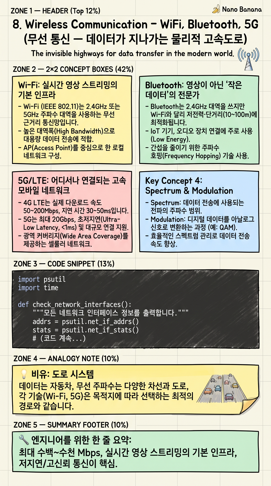

Wireless Communication – WiFi, Bluetooth, 5G

🎯 학습 목표
- Wi-Fi, Bluetooth, 5G의 대역폭과 지연 시간을 비교할 수 있다
- 실시간 영상 스트리밍에 Wi-Fi(또는 유선)가 필요한 이유를 설명할 수 있다
- Bluetooth가 영상 전송에 적합하지 않은 이유를 정량적으로 설명할 수 있다
- 5G 엣지 컴퓨팅이 AI 영상 분석에 가져오는 변화를 이해한다
앞서 배운 프로토콜(HTTP, WebSocket, RTSP)은 소프트웨어 계층의 약속입니다. 하지만 이 데이터가 실제로 이동하려면 물리적 통신 매체가 필요합니다. Wi-Fi, Bluetooth, 5G/LTE가 이 역할을 합니다.
이 세 가지는 OSI 1~2층(물리·데이터 링크 계층)에 속합니다. 고속도로(Wi-Fi), 골목길(Bluetooth), 국도(5G/LTE)처럼 각각 다른 특성을 가집니다. 어떤 도로를 선택하느냐에 따라 실시간 영상 스트리밍의 가능 여부가 결정됩니다.
이 챕터를 마치면 '왜 CCTV를 Wi-Fi에 연결하고 Bluetooth에는 연결하지 않는가', '5G가 자율주행과 스마트 공장에 왜 필요한가'를 논리적으로 설명할 수 있습니다.
핵심 내용
Wi-Fi: 실시간 영상 스트리밍의 기본 인프라
Wi-Fi(IEEE 802.11)는 2.4GHz 또는 5GHz 주파수 대역을 사용하는 무선 근거리 통신망입니다. 최신 Wi-Fi 6(802.11ax)은 이론적으로 최대 9.6Gbps 속도를 지원합니다. 1080p 영상은 보통 5~8Mbps, 4K는 15~25Mbps를 필요로 하니 여유롭게 처리할 수 있습니다.
2.4GHz는 벽 투과력이 좋지만 느리고 혼잡합니다(전자레인지, 블루투스도 같은 주파수 사용). 5GHz는 빠르지만 거리와 장애물에 약합니다. 실시간 영상 전송에는 5GHz를 권장합니다.
유선 이더넷(1Gbps)이 Wi-Fi보다 안정적이고 빠릅니다. 중요한 CCTV나 AI 분석 서버는 유선 연결을 우선합니다. Wi-Fi는 편리하지만 간섭, 장애물, 동시 접속자 수에 따라 성능이 변동합니다.
Bluetooth: 영상이 아닌 '작은 데이터'의 전문가
Bluetooth는 2.4GHz 대역을 쓰지만 Wi-Fi와 달리 저전력·단거리(10~100m)에 최적화됩니다. Bluetooth 5.0의 최대 속도는 2Mbps입니다. 1080p 영상(5~8Mbps)을 전송하기에 대역폭이 부족합니다.
Bluetooth가 잘하는 것: 오디오(무선 이어폰, 최대 1~2Mbps면 충분), 마우스·키보드 입력(수 kbps), 심박수·걸음 수 같은 센서 데이터(수 kbps), 스마트워치 알림. 작고 간헐적인 데이터 전송에 최적화되어 있습니다.
Bluetooth Low Energy(BLE)는 더 낮은 전력(수년의 배터리 수명)으로 수십 kbps 데이터를 전송합니다. IoT 센서, 스마트 자물쇠, 비콘에 쓰입니다. 실시간 영상은 절대 Bluetooth로 전송하지 않습니다.
5G/LTE: 어디서나 연결되는 고속 모바일 네트워크
4G LTE는 실제 다운로드 속도 50~200Mbps, 지연 시간 30~50ms입니다. 5G는 최대 20Gbps(이론값), 실제 사용 환경에서 100~1000Mbps, 지연 시간 1~10ms입니다. 1ms의 지연 시간은 자율주행 차량이 실시간 판단을 내리는 데 충분히 빠릅니다.
5G 엣지 컴퓨팅은 AI 분석을 클라우드 대신 통신사 기지국 근처의 서버에서 처리합니다. 카메라 → 5G → 엣지 서버(AI 분석) → 결과 전송. 클라우드까지 왕복하는 지연(100~300ms)을 5~10ms로 줄입니다. 스마트 팩토리, 자율주행, 실시간 의료 진단에 핵심입니다.
우리가 만드는 AI 비디오 분석 시스템을 5G 엣지에 배포하면 카메라 → 5G → 엣지 AI 서버(FastAPI+Worker) → 결과를 모바일로 실시간 전송하는 시스템이 됩니다.
💡 비유로 이해하기
Wi-Fi는 도시 고속도로입니다. 도심(라우터) 근처에 있을 때는 매우 빠르지만, 멀어질수록 속도가 떨어집니다. 한꺼번에 많은 차(기기)가 몰리면 정체가 생깁니다. 고화질 영상이라는 '대형 트럭'을 문제없이 보낼 수 있습니다.
Bluetooth는 아파트 단지 내 골목길입니다. 가까운 곳을 조용하고 효율적으로 오갑니다. 작은 오토바이(음악 데이터, 센서 신호) 정도는 잘 다니지만 대형 트럭(영상)은 지나가기 어렵습니다.
5G/LTE는 전국 국도입니다. 어디에나 있지만 시간과 장소에 따라 속도 차이가 있습니다. 5G는 새로 뚫린 국도로, 고속도로 수준의 속도로 전국 어디서나 접근 가능한 미래의 인프라입니다.
💻 코드 예시
psutil 라이브러리로 현재 네트워크 인터페이스의 속도와 데이터 사용량을 확인하고, 주어진 영상 비트레이트가 현재 연결에서 실시간 스트리밍이 가능한지 판단합니다. (pip install psutil)
import psutil
import time
def check_network_interfaces():
"""모든 네트워크 인터페이스 정보를 출력합니다."""
addrs = psutil.net_if_addrs()
stats = psutil.net_if_stats()
print("=== 네트워크 인터페이스 목록 ===")
for iface_name, addr_list in addrs.items():
stat = stats.get(iface_name)
if not stat or not stat.isup:
continue # 비활성 인터페이스 건너뜀
for addr in addr_list:
if addr.family == 2: # AF_INET = IPv4
speed_mbps = stat.speed # Mbps 단위
print(f" 인터페이스: {iface_name}")
print(f" IP: {addr.address}")
print(f" 최대 속도: {speed_mbps} Mbps")
print(f" MTU: {stat.mtu} bytes")
def can_stream_realtime(interface_speed_mbps: float,
video_bitrate_mbps: float) -> bool:
"""현재 인터페이스 속도로 실시간 스트리밍이 가능한지 확인."""
# 실제 사용 가능 대역폭 = 최대 속도의 70% (오버헤드 고려)
available_mbps = interface_speed_mbps * 0.7
margin = available_mbps - video_bitrate_mbps
print(f"\n=== 스트리밍 가능 여부 분석 ===")
print(f" 인터페이스 최대 속도: {interface_speed_mbps} Mbps")
print(f" 실사용 가능 대역폭: {available_mbps:.1f} Mbps (×0.7)")
print(f" 영상 비트레이트: {video_bitrate_mbps} Mbps")
print(f" 여유 대역폭: {margin:.1f} Mbps")
print(f" 결론: {'✅ 가능' if margin > 0 else '❌ 불가능'}")
return margin > 0
check_network_interfaces()
# 각 통신 방식별 실시간 1080p 스트리밍 가능 여부 체크
scenarios = [
("Wi-Fi 5GHz (802.11ac)", 300, 8.0), # 1080p ≈ 8Mbps
("Bluetooth 5.0", 2, 8.0),
("4G LTE (평균)", 50, 8.0),
("5G (도심)", 300, 25.0), # 4K ≈ 25Mbps
]
print()
for name, speed, bitrate in scenarios:
print(f"[{name}] 4K({bitrate}Mbps) 스트리밍:")
can_stream_realtime(speed, bitrate)
print()psutil.net_if_stats()로 인터페이스의 최대 속도(stat.speed)를 Mbps 단위로 얻습니다. 실제 유효 대역폭은 이론값의 70% 정도입니다(프로토콜 오버헤드, 충돌 처리 등). Bluetooth 5.0의 2Mbps 최대 속도로는 8Mbps 1080p 스트리밍이 불가능함을 수치로 확인할 수 있습니다.
🏭 현업에서의 평가
✅ 시니어가 보는 것
- Wi-Fi, Bluetooth, LTE, 유선의 대역폭·지연·전력 소모 트레이드오프
- 2.4GHz Wi-Fi와 Bluetooth 간섭 문제 인식
- 5G 엣지 컴퓨팅이 클라우드 AI와 다른 점
⚠️ 레드 플래그
- Bluetooth로 실시간 영상 전송이 가능하다고 생각
- Wi-Fi 속도가 최대 속도라고 가정 (실제 유효 대역폭은 이론값의 50~70%)
🎤 예상 인터뷰 질문
- 스마트 공장의 불량 감지 카메라 시스템을 설계할 때 어떤 통신 방식을 선택하겠습니까? 이유는?
- 5G 엣지 컴퓨팅이 기존 클라우드 AI 방식보다 유리한 시나리오는 무엇인가요?
✨ 핵심 요약
Wi-Fi = 고속도로
최대 수백~수천 Mbps, 실시간 영상 스트리밍의 기본 인프라
Bluetooth = 골목길
최대 2Mbps, 오디오·센서·입력장치에 최적, 영상 전송 불가
5G = 전국 국도
이론 최대 20Gbps, 실사용 100~1000Mbps, 지연 1~10ms
영상 필요 대역폭
1080p ≈ 5~8Mbps, 4K ≈ 15~25Mbps → Wi-Fi/유선 필수
2.4GHz 간섭
Wi-Fi 2.4GHz와 Bluetooth가 같은 주파수 대역 → 함께 쓰면 간섭
5G 엣지 컴퓨팅
클라우드 대신 기지국 근처 서버에서 AI 처리 → 지연 10배 감소
유선 > 무선
중요한 CCTV·AI 서버는 유선 이더넷(1Gbps) 우선 연결